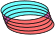
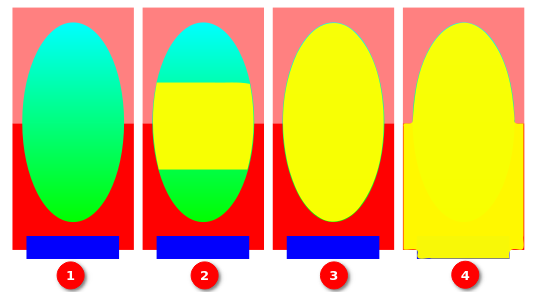
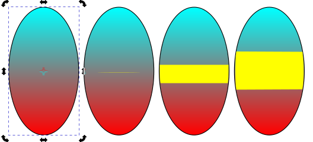
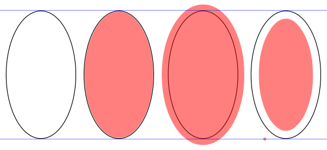
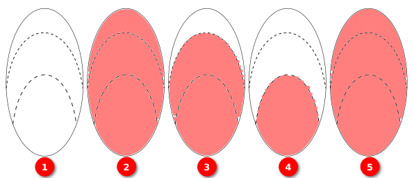

油漆桶工具
快捷键：U 或者 Shift+F7
{kind=link}
提示
驿窗注：油漆桶工具的计算规则与视图显示比例有关
油漆桶工具有一个特点，就是视图的显示比例被放大或缩小时，会影响填充结果的精确度：显示比例越大，填充就越精确。这是因为油漆桶工具的计算方法与屏幕像素有关，屏幕像素越多，结果就越精确。
所以，如果填充后发现有一些区域未填充时，可以尝试放大视图的显示比例(视图→缩放)后，再重新填充。
操作方法
点击需要填充的对象。
(默认情况下，油漆桶工具在填充时会使用最近一次使用的填充样式和描边样式)
(如果想用不同的填充/描边样式进行新的填充，可以先切换到油漆桶工具，之后用油漆桶工具在下方色板上点击一个需要的颜色，之后再用油漆桶工具进行新的填充即可；描边样式可以在窗口左下角修改)
(窗口右上角可以调整默认填充样式：右键点击会打开油漆桶工具首选项)
填充时，如果点击鼠标不松手并拖动鼠标，那么油漆桶工具会把鼠标经过的多个区域都进行填充。如果拖动鼠标的同时按住Alt键，则只填充区域不填充边框；否则会把鼠标经过的边框也按区域进行填充。
图 15-1: 按Alt键拖动鼠标填充多个区域
填充时，如果被填充对象很小，那么填充不精确会导致部分区域未被填充。这种情况下，可以考虑放大该对象，然后按Shift键点击空白处继续填充，之后用节点工具(
 )来调整多次填充产生的间隙。
)来调整多次填充产生的间隙。
工具选项
( 算法规则 )：指定使用哪个参数来计算填充范围。可使用的选项有Visible Colors(可见色)、Red(红色)、Green(绿色)、Blue(蓝色)、Hue(色相)、Saturation(饱和度)、Lightness(明度)、Alpha(不透明度)。
图 15-2: 算法规则
- 图15-2说明：
1号图是原图，椭圆是从绿到青的渐变，上方红色块是R=255/G=B=0/A=50，下方红色块是R=255/G=B=0/A=100，底部横向蓝色块是R=G=0/B=255/A=100；
2号图是在对1号图中的椭圆中心进行黄色填充时，设置 阈值=10/算法规则为Visible Colors；
3号图是在对1号图中的椭圆中心进行黄色填充时，设置 阈值=10/算法规则为Red；
4号图是在对1号图中的椭圆中心进行黄色填充时，设置 阈值=10/算法规则为Alpha；
( 阈值 )：对颜色填充范围进行计算时的参考值。数值越大，填充的颜色范围越大，反之亦然。
图 15-3: 阈值示例
- 图15-3说明：
左侧是原图，从青色到红色渐变；右侧三张图是用油漆桶工具填充黄色到左侧原图中心时的效果，阈值分别为0、10、20 。
( 伸缩 )：填充区域时，相对原始区域的扩大量/缩小量。正值会扩大填充范围，负值会缩小填充范围。
图 15-4: 伸缩示例
- 图15-4说明：
从左向右依次为原图、伸缩=0、伸缩=20、伸缩= -20 。
( cm )：单位，默认为厘米。
( 闭合缺口 )：如果被填充区域不是完全封闭的区域，那么此选项可以对缺口进行识别，并通过选项来确定是否让填充止于缺口处。(填充结果会受显示比例影响)
图 15-5: 闭合缺口选项示例
- 图15-5说明：
1号图是原图，上下两条虚线是不同类型的虚线，主要区别是间隔不同(缺口尺寸)；
2号图是在对1号图进行填充时，设置 闭合缺口 为None/Small；
3号图是在对1号图进行填充时，设置 闭合缺口 为Medium；
4号图是在对1号图进行填充时，设置 闭合缺口 为Large；
5号图是在对1号图进行填充时，同4号图一样，设置 闭合缺口 为Large，但把视图显示比例从100%放大为200%；
(可见，通过调整 闭合缺口 这个选项，或者调整视图缩放比例，都可以影响带缺口区域的填充效果)
(5号图与2号图的填充效果并不完全一致，从二者顶部的白色间隙可以看到有细微不同；原因是5号图在填充时放大了视图的显示比例，这种情况下填充时屏幕上像素更多，所以填充就更精确，导致白色间隙更小)
(填充运算可能需要一些时间，看起来像是卡顿)